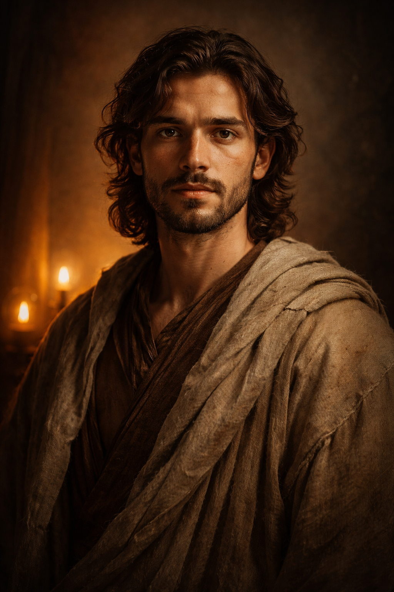
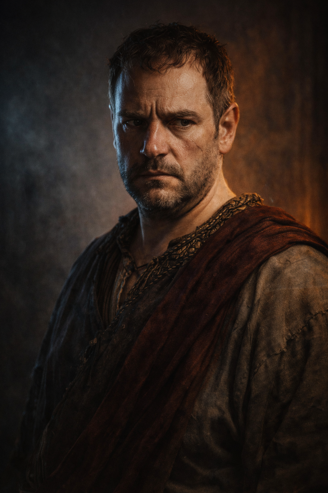

The Fatherless
In a city built on power, one child becomes proof that cruelty cannot own the future.

Cassian turns innocence into a scheme.
01
Slave records become weapons.
02
A hidden birth is arranged for mockery and status.
03
The plan creates the symbol Cassian cannot control.


A secret birth becomes a public conscience.
Maro's envy turns to confession. Sael is raised outside Aurelia, taught that forgiveness can challenge empire without becoming empire.

The child leaves the palace shadow.
Slave quarters
Cult shrine
Avarim outskirts
The empire loses possession of the story. The outskirts become the place where mercy learns a voice.

Power demands a spectacle.
Sael answers with forgiveness, turning punishment into the empire's indictment.
"Let mercy guide your hearts."

The body is punished. The story survives.
Children carry the song, cult leaders keep the teaching alive, and Cassian is left with a city he can no longer command.